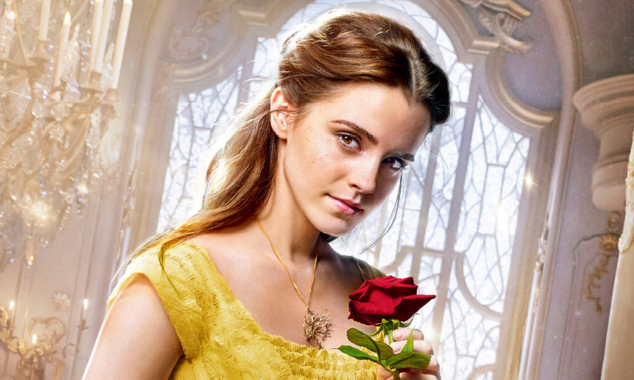

CAST
エマ・ワトソン ベル
パリで生まれ、イギリス・オックスフォードで育つ。10歳のとき、映画『ハリー・ポッターと賢者の石』でスクリーンデビュー。シリーズ全8作でハーマイオニー役を務め、一躍人気者に。 その他の代表作に、『ウォールフラワー』、『ブリングリング』など。国連の組織《UN Women》の親善大使を務めている。
ダン・スティーヴンス野獣・王子
ロンドン出身。ケンブリッジ大学在学中から学生劇に出演し、ピーター・ホール演出の舞台「お気に召すまま」でキャリアをスタート。 メインキャストを務めたTVシリーズ「ダウントン・アビー」シーズン1?3で注目された他、映画『ザ・ゲスト』、『ナイト ミュージアム／エジプト王の秘密』などに出演。
ルーク・エヴァンスガストン
イギリス・ウェールズ出身。ミュージカル「レント」「ミス・サイゴン」などのロンドン公演でキャリアを積んだのち、映画『タイタンの戦い』でハリウッド進出。 以来、『ワイルド・スピード EURO MISSION』、『ホビット 竜に奪われた王国』など数多くの作品に出演している。
ジョシュ・ギャッドル・フウ
フロリダ出身。2011年にブロードウェイ・ミュージカル「ブック・オブ・モルモン」で、トニー賞主演男優賞ノミネート。おもな出演作に、TVドラマ「大統領とバカ息子」、 映画『スティーブ・ジョブズ』、『ピクセル』などがある。『アナと雪の女王』ではオラフ役を務め、その歌声で世界を魅了した。
ケヴィン・クラインモーリス
アメリカ・セントルイス出身。ジュリアード音楽院で演技を学び、舞台俳優としてキャリアをスタート。2度のトニー賞受賞歴がある他、 映画『ワンダとダイヤと優しい奴ら』ではアカデミー助演男優賞に輝いた。その他の代表作に、『ソフィーの選択』、『イン&アウト』、『五線譜のラブレター』など。
ユアン・マクレガールミエール
スコットランド出身。名門ギルドホール音楽演劇学校で演技を学び、ダニー・ボイル監督の映画『トレインスポッティング』で大ブレイク。 『スター・ウォーズ』エピソード1?3では、オビ＝ワン・ケノービ役に抜擢された。その他の代表作に、『ムーラン・ルージュ』、『ビッグ・フィッシュ』など。
イアン・マッケランコグスワース
イギリス・バーンリー出身。60年代から舞台・映画・TVで活躍し、ローレンス・オリヴィエ賞やトニー賞など、数多くの栄誉に輝く。1990年にはナイト爵を授与された。 『X-MEN』シリーズのマグニートー役や、『ロード・オブ・ザ・リング』三部作および『ホビット』三部作のガンダルフ役でもおなじみ。
エマ・トンプソンポット夫人
ロンドン出身。アカデミー賞にノミネートされること5回、うち『ハワーズ・エンド』で主演女優賞に、『いつか晴れた日に』では脚色賞に輝いた映画界きっての才媛。 その他の代表作に、『日の名残り』、『ハリー・ポッター』シリーズ3・5・8作目、『ウォルト・ディズニーの約束』など。
ググ・バサ＝ロープリュメット
イギリス・オックスフォード出身。名門として知られるロンドンの王立演劇学校で学ぶ。舞台で高い評価を受けたのち、J・J・エイブラムス製作のTVドラマ『アンダーカバー』で主役に抜擢。 TVドラマ「TOUCH／タッチ」シーズン1、映画『幸せの教室』、『ベル ある伯爵令嬢の恋』などにも出演している。
オードラ・マクドナルドマダム・ド・ガルドローブ
ベルリンで生まれ、アメリカ・フレズノで育つ。ジュリアード音楽院で声楽を学び、おもにブロードウェイで活躍中。 「ポーギーとベス」「レディ・デイ・アット・エマーソンズ・バー&グリル」などに出演し、トニー賞の演技部門では史上最多の6回の受賞歴を誇る。 歌手としても活動し、これまでに5枚のソロアルバムをリリース。
CV
昆 夏美
ベル
東京都出身。ミュージカル「ロミオ＆ジュリエット」のジュリエット役「ハムレット」のオフィーリア役「レ・ミゼラブル」のエポニーヌ「ミス・サイゴン」のキム。 ミュージカル界の枠を超えた新世代の歌姫と呼ばれている。
山崎 育三郎
野獣
東京都出身。「レ・ミゼラブル」のマリウス役に抜擢されて以来、「ロミオ&ジュリエット」「モーツァルト！」「ミス・サイゴン」「プリシラ」などのミュージカル 「下町ロケット」カヴァーアルバム「1936～your songs～」月9ドラマ「突然ですが、明日結婚します」に出演。
岩崎 宏美
ポット夫人
東京都出身。「二重唱（デュエット）」でデビュー以来、「ロマンス」「すみれ色の涙」「聖母たちのララバイ」などのヒット曲をもちデビュー40周年に初のニューヨーク公演を行う。 ミュージカル「レ・ミゼラブル」の日本初演でファンティーヌ役。
村井 國夫
モーリス
佐賀県出身。「レ・ミゼラブル」のジャベール役を務めた他、「マイ・フェア・レディ」「ミー＆マイガール」「エリザベート」「ベガーズオペラ」などの舞台に出演。 TVでは、NHK大河ドラマや時代劇、刑事ドラマなどで人気を博している。また声優としても活躍中。
吉原 光夫
ガストン
東京都出身。「ライオンキング」「美女と野獣」など数々の人気作に出演し、09年《Artist Company響人》を立ち上げて活動している。 帝国劇場開場100周年記念公演「レ・ミゼラブル」では、32歳でジャン・バルジャン役を演じた。
藤井 隆
ル・フウ
大阪府出身。様々なバラエティ番組に出演し人気を博し、「ナンダカンダ」で歌手デビューし、同年には紅白歌合戦に出場するなど、芸人、歌手、俳優としてマルチな才能を発揮。 おもな出演作に、映画『模倣犯』、舞台「酒と涙とジキルとハイド」、TVドラマ「真田丸」「逃げるは恥だが役に立つ」など。
成河(そんは)
ルミエール
東京都出身。「エンジェルス・イン・アメリカ」のエンジェル役に抜擢されて以来、舞台を中心に活躍している。 主演を務めた主な舞台に、「グランドホテル」「100万回生きたねこ」「アドルフに告ぐ」「ショーシャンクの空に」などがある他、 NHK連続テレビ小説「マッサン」で連続ドラマ初レギュラー出演を果たした。
小倉 久寛
コグスワース
三重県出身。劇団本公演、毎年6月の新橋演舞場公演「熱海五郎一座」のレギュラーの舞台の他、客演でミュージカルにも出演。 映画、ドラマ、バラエティ、声優、ナレーターとして活躍中。声優としては、「天才バカボン」、海外ドラマ「サブリナ」など。
濱田 めぐみ
マダム・ド・ガルドローブ
福岡県出身。「美女と野獣」のベル役に抜擢され劇団四季デビュー。さらに「ライオンキング」「アイーダ」「ウィキッド」の3作品でヒロインを演じた。 その後も数多くの舞台で活躍しつつ、2枚のソロアルバムをリリース。
島田 歌穂
プリュメット
「レ･ミゼラブル」で脚光を浴び、出演回数は1,000回を超えた。同作の世界ベストキャストに選ばれ 、英国王室主催の御前コンサートに出演。 主な出演作品は「ウエストサイド・ストーリー」「三文オペラ」など多数。芸術選奨文部大臣新人賞、紀伊國屋演劇賞個人賞など受賞多数。大阪芸術大学教授。